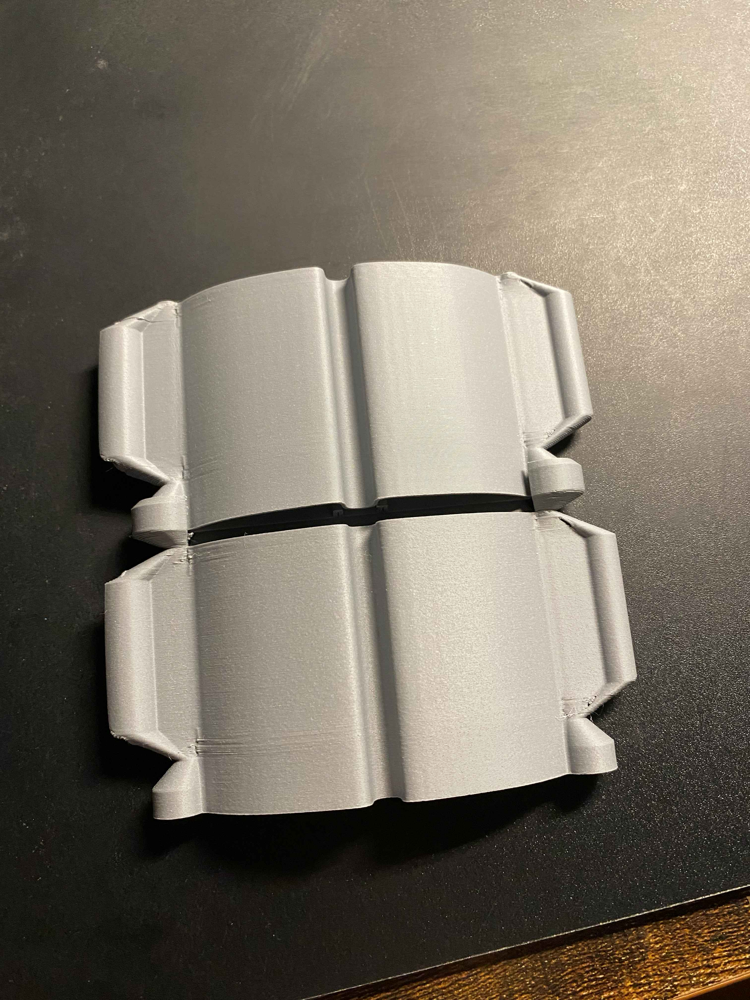
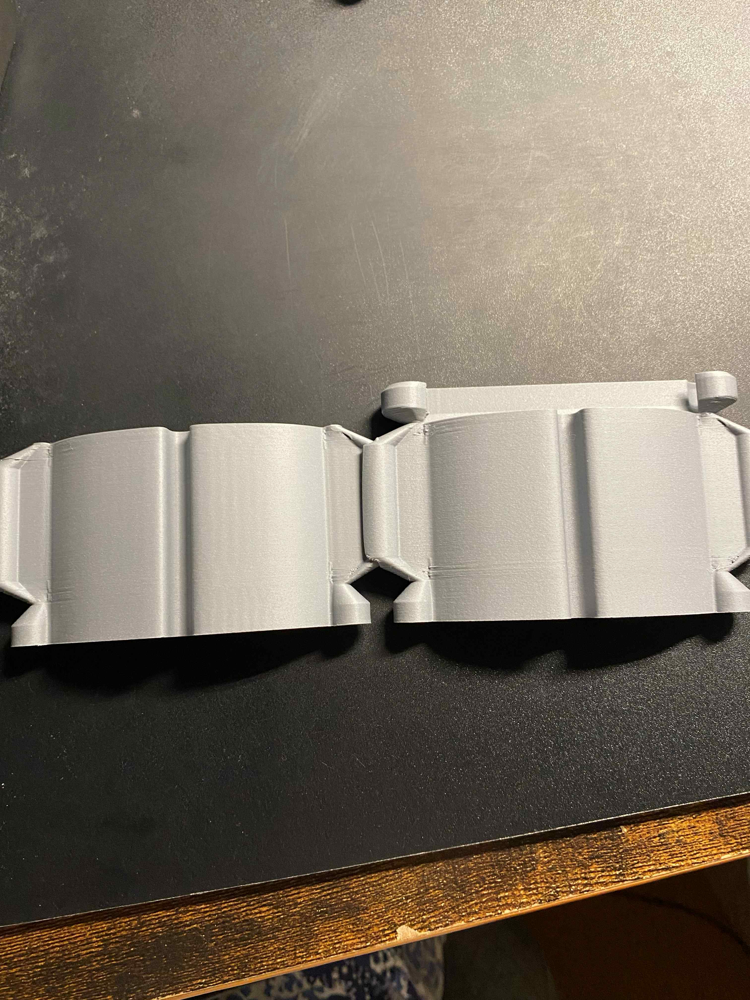
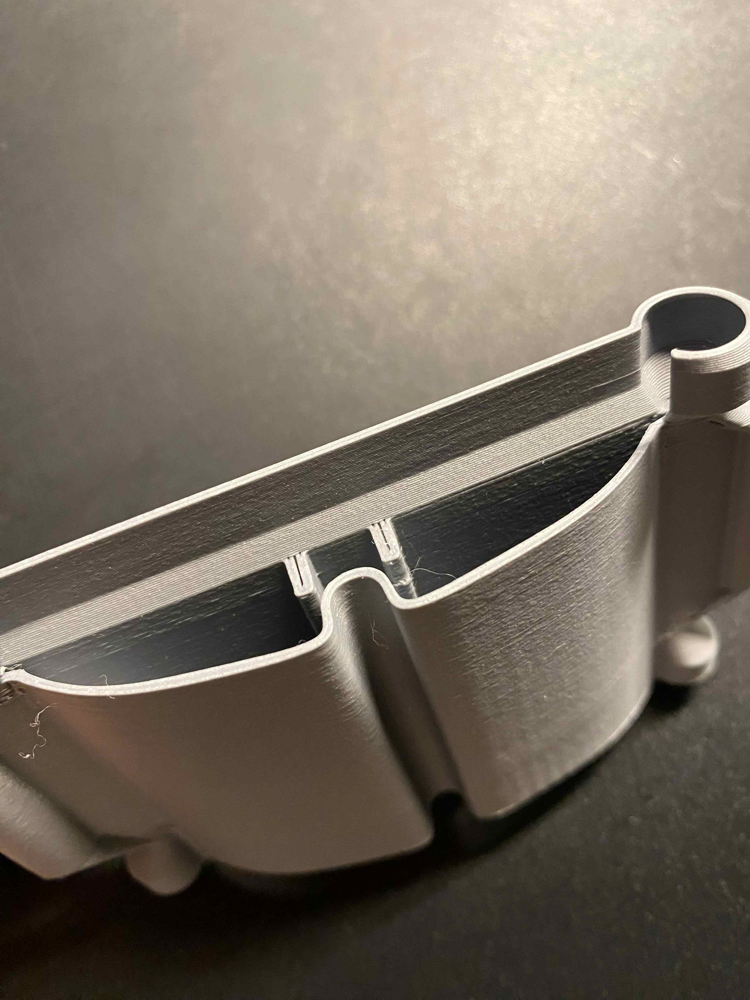

１．現状について
前回挙げていた分解と組み立てができる構造自体は、一応の完成までこぎつけた
衝撃吸収の構造を中心に四方からはめ込めるようにしている
一筆書きになるようにして、そりが起きてもよいように厚みをした部分に出している
また、同様に前回挙げていた衝撃吸収としての構造も少し変更し、摩擦が起きるようにした
これにより衝撃が反射しないようになると考えている
衝撃吸収の構造を中心に四方からはめ込めるようにしている


一筆書きになるようにして、そりが起きてもよいように厚みをした部分に出している
また、同様に前回挙げていた衝撃吸収としての構造も少し変更し、摩擦が起きるようにした
これにより衝撃が反射しないようになると考えている

２．今後について
構造自体はプロトタイプまでできているものの、実際に印刷自体はできていない
そのため、ペレットの方で実際に印刷して調整していく必要がある
そのため、ペレットの方で実際に印刷して調整していく必要がある
課題まとめ：
衝撃吸収について→性能の確認 プリントについて→細かな調整が必要
衝撃吸収について→性能の確認 プリントについて→細かな調整が必要